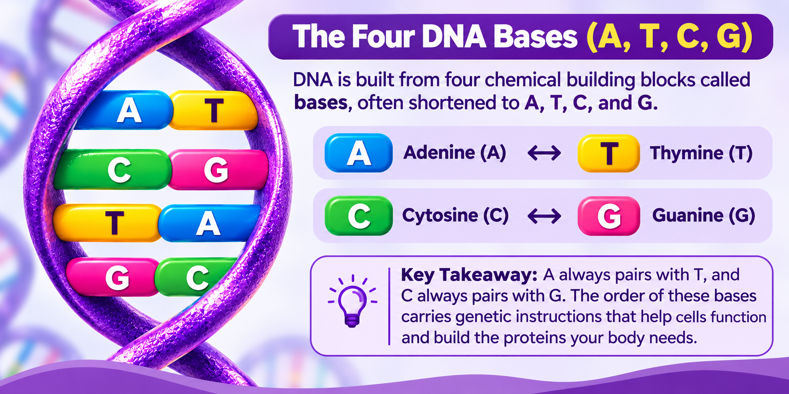
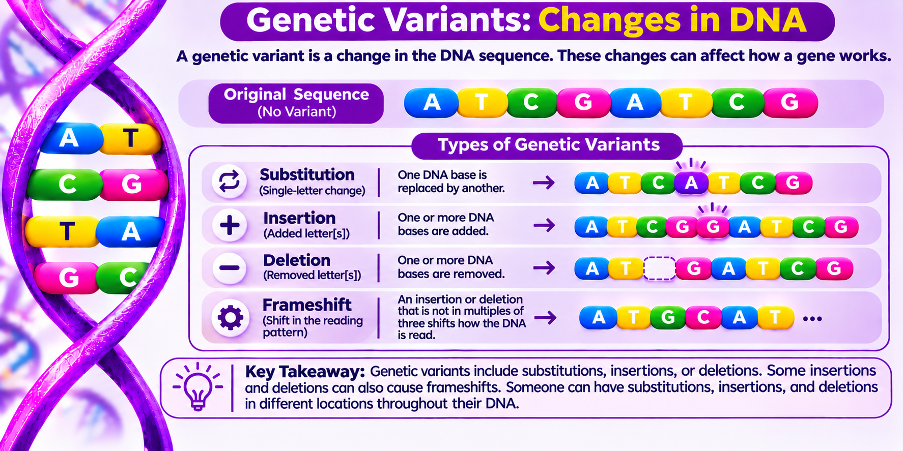
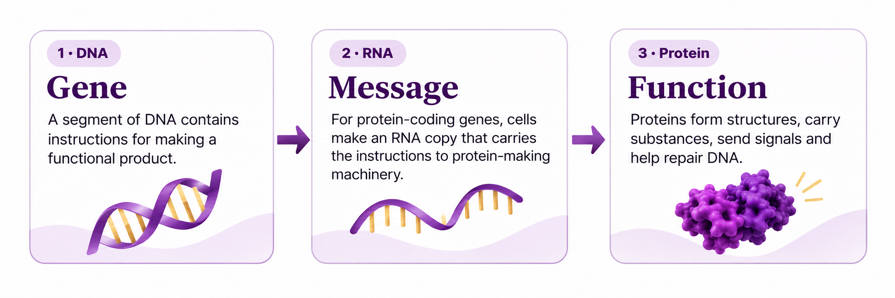

![EquiGen Health Foundation DNA letter E logo]()
EquiGen custom imagery in preparation
01 · GenomeThe entire cookbook
A complete cookbook represents the genome, the full collection of genetic instructions in your DNA.
Start with the building blocks of DNA, genetic variation, and inheritance. Then choose a familiar analogy to explore genes, proteins, and their connections to health.
Learn what DNA is and what it is made of, how genetic changes can affect health, why the same change can affect people differently, and how changes can run in families. Then explore these ideas through a familiar analogy.
DNA stands for deoxyribonucleic acid. It is the molecule that stores genetic instructions used by your cells to grow, function, and maintain your body. Most of your DNA is found in the nucleus of your cells, packaged into structures called chromosomes.
DNA has a shape called a double helix, similar to a twisted ladder. Its sides are made of alternating sugar and phosphate molecules, and the rungs are pairs of chemical bases.
The four DNA bases are adenine (A), thymine (T), cytosine (C), and guanine (G). A pairs with T, while C pairs with G. The order of these letters carries genetic information, much like the order of letters changes the meaning of words.

A genetic variant is a difference in a person’s DNA sequence. Some variants have no noticeable effect, while others can influence how genes function or affect health.

People can carry the same genetic variant and still have different experiences. Explore two ways this can happen.
Some people with a particular disease-associated variant develop the related condition, while others do not.
Illustrative example only: the number of people shown does not represent a real penetrance rate.
Select a factor to learn more. These factors can interact, and they do not always explain every difference.
Remember: Having no symptoms does not necessarily mean someone cannot carry or pass on an inherited variant. A variant does not always predict exactly what will happen to a person.
Most people inherit 23 chromosomes from each biological parent—23 through an egg and 23 through a sperm—for a total of 46 chromosomes, usually arranged in 23 pairs. The chromosomes in each pair carry many of the same genes, but the versions of those genes may differ.
Simplified illustration: the chromosome symbols represent only a few examples, not all 23 or 46 chromosomes. The child’s two-color chromosomes are a visual teaching aid, not a literal 50/50 composition of each chromosome. Typically, one chromosome in each non-sex chromosome pair comes from each biological parent; genetic recombination can mix DNA from earlier generations.
For most genes on the non-sex chromosomes, one copy comes from each biological parent. The two versions are called alleles. Compare these examples:
In this simplified example, A represents a dominant allele and a represents a recessive allele. A dominant allele can influence a trait with one copy, while a recessive trait typically requires two recessive copies. Many real health conditions have more complex inheritance patterns.
Having two different versions (alleles) of a gene at a particular location: one dominant (A) and one recessive (a).
Having two copies of the same allele at a particular location. AA is homozygous dominant; aa is homozygous recessive.
This simplified example shows two heterozygous parents (Aa × Aa) for a single gene. Each parent can pass on A or a. This illustrates possible combinations, not a prediction of an individual's health.
Each cell represents a 25% chance of that combination for a child in this simplified example. Inheritance patterns vary by condition, and most health outcomes are more complex.
Both pathways teach the same science, including how proteins work. Choose one continuous learning path, then move into the shared genetics lessons.
Imagine the instructions for building and maintaining your body as a treasured family cookbook.
A complete cookbook represents the genome, the full collection of genetic instructions in your DNA.
Chapters help you find recipes. Chromosomes organize DNA, and each chromosome carries many genes.
A gene is a DNA segment with instructions for a functional product, often a protein. Proteins perform many of the body's jobs.
A genetic variant is a change in a DNA sequence. Like changing a recipe ingredient, its effect can be harmless, helpful or harmful, depending on the change and its context.
A recipe provides instructions, but the finished dish does not appear on its own. Cells also need molecular machinery to use genetic instructions and make proteins.
For protein-coding genes, cells copy DNA instructions into messenger RNA. Protein-making machinery then reads that message to build a chain of amino acids, which folds into a functional protein.

Illustration: Crabtree + Company, National Institute of General Medical Sciences (NIGMS), NIH. View the original labeled illustration and source information.

Good to know: Not every gene makes a protein. Some genes produce RNA molecules that perform functions of their own.
Genes often provide instructions for making proteins. Explore five protein functions using the kitchen analogy. The science and real biological examples are the same in both paths.
Imagine a community center being built from a complete set of blueprints. The plans organize everything needed to create a working space—just as DNA carries organized instructions that cells use to build and maintain your body.
All the drawings needed for the community center represent the genome—the complete collection of genetic instructions in your DNA.
The community center’s plans are organized into sets, such as electrical, plumbing and structural drawings. Similarly, chromosomes are long, organized DNA molecules that carry many genes.
A particular blueprint detail might specify how to install the community center’s doors or lighting. A gene is a segment of DNA with instructions for a functional product, often a protein.
Imagine one measurement on the community center’s blueprint is different. The change might have little effect, or it might affect how something works. A genetic variant is a difference in a DNA sequence; many variants have no noticeable health effect, while some can influence how the body functions.
A community center’s blueprints provide instructions, but construction crews and equipment are needed to turn those plans into a functioning building. Similarly, cells use molecular machinery to read genetic instructions and make proteins.
For protein-coding genes, cells copy DNA instructions into messenger RNA. Protein-making machinery then reads that message to build a chain of amino acids, which folds into a functional protein.
Illustration: Crabtree + Company, National Institute of General Medical Sciences (NIGMS), NIH. View the original labeled illustration and source information.
A segment of DNA contains instructions for making a functional product.
For protein-coding genes, cells make an RNA copy that carries the instructions to protein-making machinery.
Proteins form structures, carry substances, send signals and help repair DNA.
Good to know: Not every gene makes a protein. Some genes produce RNA molecules that perform functions of their own.
Just as a community center relies on equipment, communication systems, deliveries and structural supports to function, your body relies on different proteins. Explore five protein functions through the community center analogy. The science and real biological examples are the same in both paths.
DNA damage can happen during normal cell activity or from exposures such as ultraviolet light. Cells have ways to detect damage, coordinate repairs, and sometimes stop a damaged cell from dividing.
A network of proteins detects DNA damage, sends signals, and helps cells pause division, repair the damage, or, when necessary, undergo programmed cell death.
Think of it as: a safety system that detects a problem and calls for repairs.
These genes help prevent uncontrolled cell growth. Different tumor-suppressor genes have different jobs, including regulating cell division and supporting DNA repair. BRCA1 and BRCA2 are examples.
Think of them as: important parts of a building's safety systems.
A DNA repair process that fixes certain breaks affecting both strands of DNA. It uses a matching DNA sequence, usually a sister chromatid, as a guide to accurately restore the damaged region.
Think of it as: repairing a damaged blueprint using an intact matching copy.
Why this matters: BRCA1 and BRCA2 proteins help homologous recombination repair work properly. A harmful inherited variant can increase cancer risk, but it does not mean someone will definitely develop cancer.
One important distinction: DNA repair by homologous recombination is not the same process as chromosome crossing over during meiosis.
Learn more: American Cancer Society: tumor-suppressor and DNA repair genes.
Which statement best describes a genetic variant?
Explore how genes and proteins relate to two conditions discussed across EquiGen's Learning Hub.
These resources offer molecular illustrations and background explanations. Where an image is reproduced, its source and attribution are shown next to it.